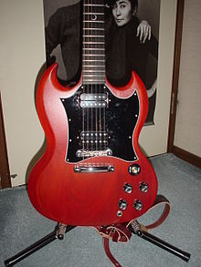

SG

깁슨 SG(Gibson SG)는 깁슨에서 생산하는 전기 기타이다. 이 악기를 애용하는 대표적인 기타리스트는 앵거스 영과 토니 아이오미가 있다. 넥이 얇고 하이플랫 연주가 용이하며 무게가 가벼운 게 특징이다. 이 기타는 무게 중심이 맞지 않아 스트랩을 메고 서서 치면 넥다이브(Neck Dive) 현상이 일어난다. 앉아서 칠때에는 바디가 조금 위아래도 넓게 느껴지는 부분이 있다. 그리고 SG를 사용할 때 일반적인 스트라토케스터와는 다르게 넥이 좀 더 뻗어나와 있다는 느낌이 들며, 넥에 적응 시에는 좀 더 플레이에 용이하단 느낌이 드는 부분이 있다. 특히 하이프렛 부분에서 편한 느낌이 들며, 적응시에 슈퍼스트랫을 이용하는 것 만큼 용이점이 있다. 사운드는 미들톤이 풍부하나 적절한 톤 세팅시 어느 장르에도 잘 맞을 수 있는 훌륭한 기타라 칭할 수 있겠다.